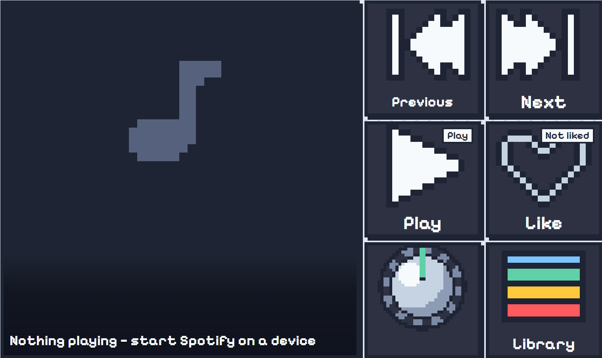
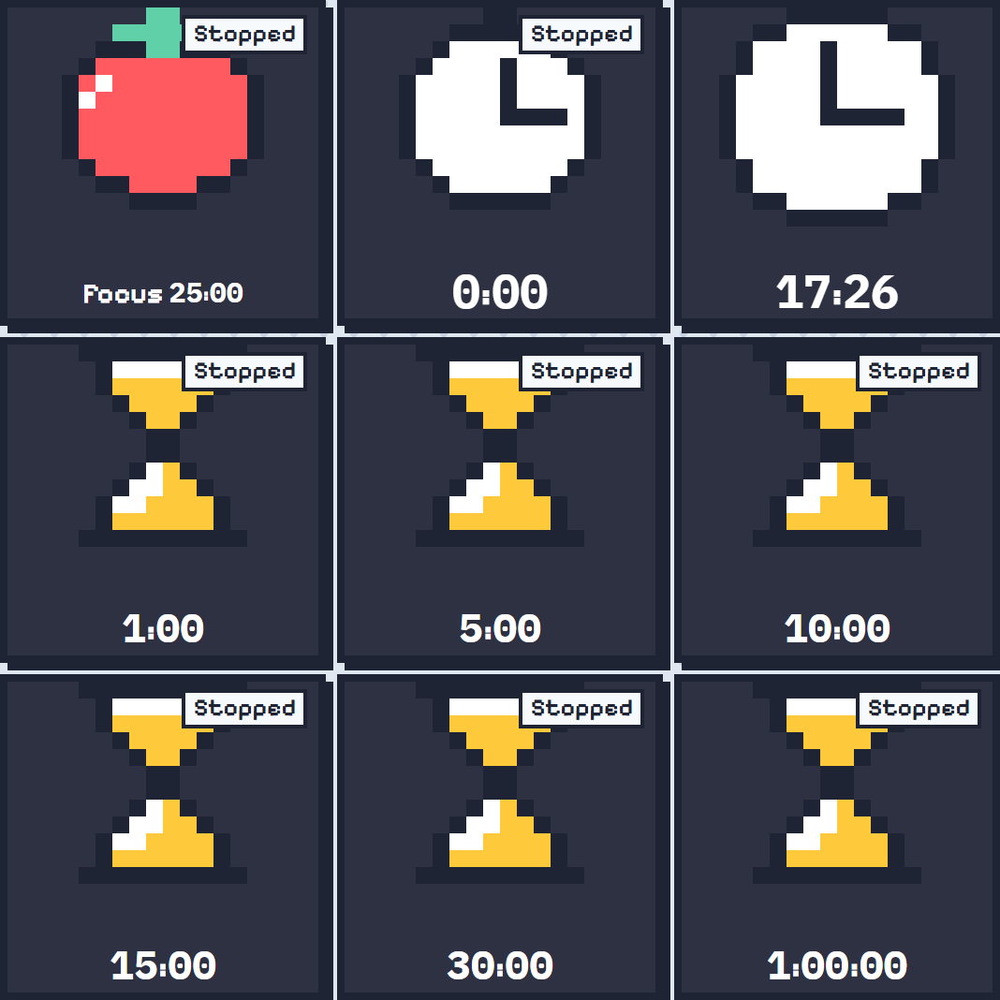
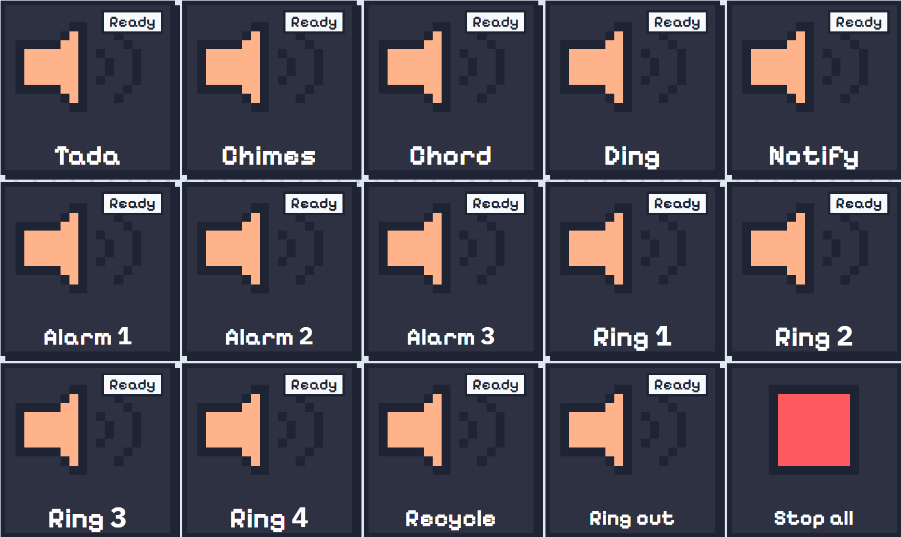
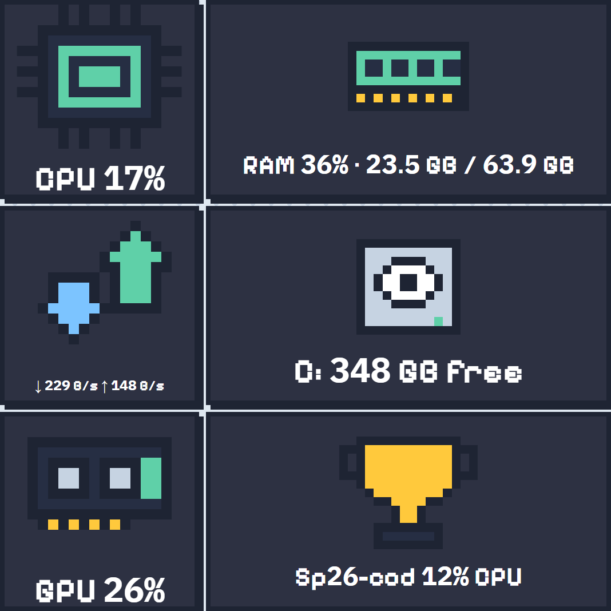
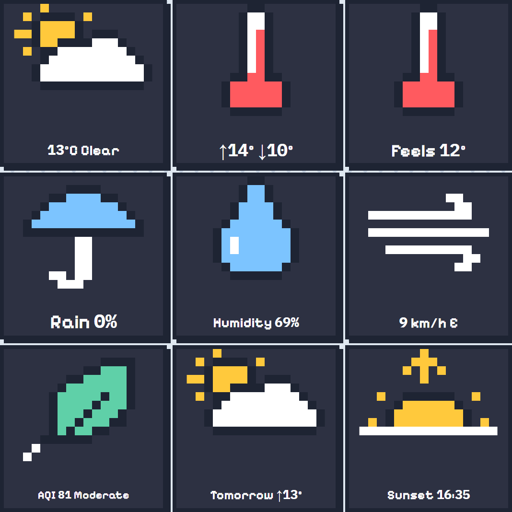
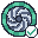
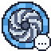
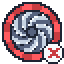

General
A Stream Deck for your PC.
- Macros and media keys
- Spotify control
- Timer and system monitor
- Soundboard and weather
Minniondeck puts big square buttons and live screens on your phone. Press a key and your PC does it: play music, start a timer, check your PC or play a sound. Plugins add even more buttons.
Desktop app 0.1.1No phone app neededNo account needed
The Deck page of the desktop app, with its built-in keys. Your phone shows the same 5 × 3 page. Tap a key to try it, double-click one to edit it.
Minniondeck is not finished yet, so you will find bugs. It comes as it is, without any warranty. If you change the code or add plugins from others, problems from those changes are your own responsibility. Found a bug? Please tell us.
Pick one during install and Minniondeck Setup installs the plugins that go with it. Add the others later from the marketplace.
A Stream Deck for your PC.
Go live and run your stream from your phone.
Keys and live screens for your games.
Meetings and focus, a key away.
From the installer to your first key press in a few minutes. Scroll through it.
Run the installer and pick what you'll use it for. It fetches the right plugins and anything Windows needs.
Scan the QR code on the PC with your phone's camera and press Allow on the PC. Your deck opens in the phone's browser.
The PC runs the action, and live screens update on the phone.
Every button is made in one window, in four steps: a name, what it does, a picture, and a colour. This is a small working copy of it. Make your changes, then press Save button. Or double-click a key on the deck at the top.
This is how the button looks on the deck and on your phone.
The real window also has 1,036 pixel icons and 3,466 app logos with search, up to 8 looks, 15 press effects, and every action your plugins add.
No cloud service sits between your phone and your PC. Plugins add whole worlds of buttons.
Play, skip, like and volume, with what's playing on a key.
AvailableCountdowns, a stopwatch, a focus timer and a clock, each on a key.
AvailableCPU, GPU, memory, disk and network, live on your phone.
AvailablePlay your own sound files with one press.
AvailableThe weather now, highs and lows, rain and wind.
AvailableA set of pages for each app. Minniondeck can switch to it by itself when that app comes to the front.
AvailableDraw pixel pictures and GIFs for a button right from MinnionDeck: Edit image opens the editor and syncs it back.
AvailableA Rust kit and template for writing your own plugins.
AvailablePress hotkeys, open programs and websites, and change the volume, with no plugin needed.
AvailableMinniondeck started as a home project and is shared with everyone. The app, the official plugins and the installer are free to use, and the source is on GitHub to read.
The marketplace lists official and community plugins. Install them from this site or from the Marketplace page inside the app.





No. Your phone is the deck. Minniondeck runs on your PC and your phone shows the keys in its web browser.
No. Minniondeck and its official plugins are free to use. There are no accounts and no subscriptions.
Android phones, iPhones and tablets, on the same Wi-Fi as your PC. There's no app to install: the deck opens in the browser.
From the marketplace, which reads the plugin list from GitHub. Official plugins are made by the Minniondeck project. Community plugins are sent in through the Submit a plugin form and checked by hand before they're listed.
One installer, your PC, your phone. Download Minniondeck for Windows.
Get MinniondeckOne installer for your PC. It's free, with no account to make, and your phone needs no app: the deck opens in its browser.
Windows 10 and 11, 64-bit · installer .exe
SHA-256 9f29ff519b1322fa3f4b5143f7eef20c4905d9ee9047072897d3c45979e0a17d
Setup downloads the plugins that go with it.
A preview of the setup. Click through it, it installs nothing.

Updates itself
Check the fileGet-FileHash .\setup.exe and compareYes. Add the other plugins any time from the Marketplace page in the app.
Yes, it downloads the plugins for the use you pick. After that, the PC and phone talk over your own network.
Every plugin here is free. Press Install and Minniondeck opens, downloads the plugin from GitHub, checks it and asks before installing.
Send your plugin here and it can go in the marketplace. We review every plugin by hand, usually within 7 days.
We review every plugin by hand, within 7 days. If it's approved, it shows up in the marketplace. We don't send emails, so check back here.
Prefer GitHub? You can still open a pull request on the marketplace repository.
Minniondeck turns your phone into a deck of buttons for your PC. These pages explain how it works, how to make buttons, pictures and plugins, and where everything is kept.
Set up the PC app and connect your phone.
Pick an action, an icon and a look.
Edit image: pictures and pixel animations for a button.
Add your own actions in Rust.
You press a key on the phone. The phone tells Minniondeck on your PC, and Minniondeck runs what the button does: it presses keys, opens a program, changes the volume, or asks a plugin to talk to another app. Live buttons, like your CPU use or what Spotify is playing, update on the phone as things change.
You can also click any button in the Deck on the PC. That's handy for testing a button before you reach for the phone.
There's no phone app to install. Your deck opens in the phone's web browser.
The pairing code only works while the Phones page is open. Leave the page and it stops, so nobody else can pair later.
| Setting | What it does |
|---|---|
| Port | Change it only if another app uses it. Connected phones move with it; phones that are off need pairing again. |
| Phones follow the page | When you turn the page on the PC, phones turn too. |
| Keep screens awake | The phone screen stays on while the deck is open. |
| Vibrate on press | A short buzz for each press. |
The Deck is where your buttons live. It looks the same on the PC and on your phone.
The rail shows one icon per page. Point at an icon to see its name.
| Page | What it's for |
|---|---|
| Deck | Your pages and buttons. Make and edit buttons here. |
| Profiles | Sets of pages, and switching between them. |
| Phones | Pair phones and see which are connected. |
| Marketplace | Browse plugins and install them, read live from GitHub. |
| Settings | Start-up, look, phones, plugins, backups and updates. |
Every button is one square key: its picture in the middle and its name small at the bottom. Click an empty key (+) to make one, double-click a button to edit it, and right-click it for everything else.
Settings › Appearance changes how big buttons are drawn on the PC and whether their names show. Hiding names hides them on phones too.
This is where you make a button and change it later. To open it for a button you already have, double-click the button, or right-click it and pick Edit button. The preview is on the left, the four steps on the right.
| Part | What you can do |
|---|---|
| Preview | The button as it looks on the deck and on your phone. Try it plays its press effect. |
| 1. What is it called? | The button's name, shown small at the bottom of the key. |
| 2. What does it do? | Search every action, or filter by Built in or by a plugin, then fill in its boxes. The actions are in the table below. |
| 3. Picture | 35 simple pictures, 1,036 pixel icons and 3,466 app logos, with search. Make your own pictures on this website, then Import them. |
| Looks | Up to 8 looks. Each press shows the next one, then back to the first. Each look has its own name, text, picture and colour. Use + Add look in step 3. |
| 4. Colour | The button's colour and its press effect: how it moves when you press it. |
| Add button, Cancel | Add button (or Save on a button you already have) keeps it. Cancel, ✕ or Esc leave everything as it was. |
If a step is missing, like an empty name, the bar at the bottom says which one before it adds the button.
Right-click a button for its menu:
To test a button, click it on the Deck: it runs, just like a press on your phone.
| Action | Group | What you set |
|---|---|---|
| Press keys | Keyboard and mouse | Click the box, then press the keys together, like Win+Shift+S. |
| Type text | Keyboard and mouse | Up to 500 characters. |
| Mouse click | Keyboard and mouse | Left, right or middle. |
| Open a program | Apps and web | Its path, or drag the program or a shortcut onto the box. Arguments are optional. |
| Open a website | Apps and web | The address. |
| Change volume | Sound | Up or down, by 1 to 100%. |
| Mute microphone | Sound | Nothing. It has two states: Mic on and Mic muted. |
| Wait | Timing | Up to 60 000 ms, between other steps. |
| Go to page | Pages | A page or folder of the profile. |
| Back | Pages | Nothing. Goes to the page before. |
Plugins add their own actions, listed under the plugin's name, such as Timer countdown or Spotify volume.
A button can run steps one after another, like a macro: open a website, wait 3 seconds, type some text. Add steps in the Edit button window and put a Wait between them where an app needs time.
Some buttons have more than one look, such as Mic on and Mic muted, or a plugin's Off, Recording and Paused. Each look can have its own picture, colour and name, so the key shows what's going on. Small dots in its corner show which look is on.
A profile is a set of pages and folders: one for streaming, one for games, one for everyday use.
Settings › Profiles and pages › Open on start picks where Minniondeck opens: where you left off, or a page you choose.
.mdprofile file. It's sealed, so it can only be read by Minniondeck..mdprofile file, or use Import, to add it. A backup is made first.Pictures and GIFs for a button are made in the editor that comes with MinnionDeck. It opens in your browser and syncs straight back to the button.
Press Edit image on another button while the editor is open, and the same browser tab opens that button.
You can also bring in a file you made elsewhere: in the Edit window, Image or GIF, then Import….
| Tool | What it does |
|---|---|
| Pencil B | Draws pixels. Drag to draw lines. |
| Eraser E | Makes pixels see-through. |
| Fill F | Fills an area of one colour. |
| Pick I | Takes a colour from the drawing. |
| Line L, Box R, Circle C | Drag to draw. Tick Filled shapes for solid boxes and circles. |
| Move M | Drag to shift the whole frame. |
| Text T | Click to stamp a few letters in a small pixel font. |
| Flip, Turn | Flip the frame either way or turn it a quarter. |
| Mirror drawing | Draws on both sides at once. |
| Onion skin | Shows a faint copy of the previous frame (GIFs). |
| Timeline | Add, copy, delete and move frames, set the speed, or give one frame its own time (GIFs). |
| Start from an animation | Pulse, loading spin, loading bar, recording, blink, ping and heartbeat, ready to change (GIFs). |
| Undo Ctrl+Z | Redo is Ctrl+Y. |
Start from a picture shrinks any picture down to pixels, to trace or tidy up.
library\media. See Where your files are.Everything Minniondeck saves is on your own PC, in one folder:
%APPDATA%\com.minnion.deck\Settings › About shows the exact path, with a button to open the logs folder.
| In that folder | What's in it |
|---|---|
library\library.json | Profiles, folders, pages and buttons |
library\media\ | Pictures and GIF files you imported, one file each |
settings.json | Everything on the Settings page |
devices.json | Paired phones |
backups\ | Up to 5 encrypted backups of your library |
plugins\<id>\ | Each installed plugin's own folder |
plugin-data\<id>\ | Each plugin's settings, kept apart so they survive updates |
logs\minniondeck.log | What the app did, for fixing problems. The older log is minniondeck.old.log |
tiles\ | Street map tiles the live map has loaded, kept for 14 days |
Don't edit these files while Minniondeck is running. It writes them safely, a whole file at a time, and may write over your change.
A plugin adds actions, icons, GIFs and settings to Minniondeck: Spotify, Timer, Soundboard and Weather are all plugins.
plugins\<id>\ with manifest.json, actions.json, a DLL, and icons\ and gifs\..mdplugin file, which is that folder zipped..mdkey under Trusted authors.Plugins run with the same rights as Minniondeck. Install only plugins from people you trust, and turn Developer mode on only for plugins you know.
A plugin with settings has a Settings button in Settings › Plugins, for things like your Spotify Client ID. Passwords are encrypted by Windows and never shown again.
Double-click a .mdplugin file, or open Settings › Plugins and choose Install a plugin…. Minniondeck shows what it is and asks before installing.
plugin-data\, apart from the plugin.Minniondeck checks your plugins for updates once a day (Settings › Plugins). A plugin with a newer version gets an Update button and a badge on the Marketplace page.
In Settings › Plugins, Turn off stops a plugin without removing it. Remove deletes it. Buttons that use it stay on your pages but won't run until it's back.
Plugins are written in Rust with the plugin kit. The template builds, packs and installs itself, so you can see your first action on the deck in a few minutes.
In a terminal, from the folder Minniondeck is installed in:
Minniondeck.exe plugin new my_plugin --dir C:\codeThe id uses lower-case letters, digits and _.
Double-click build.cmd in the new folder. It:
dist\my_plugin-<version>.mdplugin,Then open a button's Edit window: What it does › Action › My plugin. build.ps1 -NoInstall only builds and packs.
| File | What it is |
|---|---|
src\lib.rs | What each action does when pressed |
actions.json | Your actions: id, label, group, icon, fields, states |
manifest.json | Id, name, version, DLL, icons, GIFs and settings. Change version for each release |
icons\ | PNG, GIF, SVG, JPG or WEBP, up to 512 KB each |
gifs\ | GIFs that come with the plugin, up to 2 MB each |
kit\ | The plugin kit. Everything it can do is documented in kit\src\lib.rs |
[
{
"id": "say_hello", // what e.action is in press()
"label": "Say hello", // shown in the Action list
"group": "My plugin",
"icon": "icons/icon.png",
"states": ["Off", "On"], // optional, switched with set_state
"fields": [
{ "key": "name", "label": "Who to greet", "kind": "text", "def": "world" },
{ "key": "size", "label": "Size", "kind": "select", "options": ["Small", "Big"] },
{ "key": "scene", "label": "Scene", "kind": "select", "dynamic": true }
]
}
]A "dynamic": true list is filled by your plugin's options(). Call host.refresh_options("action") when the choices change.
use minniondeck_plugin::{ButtonEvent, Host, Outcome, Plugin, export};
struct MyPlugin { host: Host }
impl Plugin for MyPlugin {
fn start(host: Host) -> Self {
host.log("My plugin started");
MyPlugin { host }
}
fn press(&mut self, e: &ButtonEvent) -> Outcome {
match e.action.as_str() {
"say_hello" => {
// Shows on the button, on the PC and on phones
self.host.set_title(&e.button, format!("Hi {}", e.field("name")));
Ok("Said hello".into())
}
other => Err(format!("No action called {other}")),
}
}
}
export!(MyPlugin);Only start and press are required.
| Event | When |
|---|---|
press | A button with your action was pressed. Return Ok(message) or Err(what went wrong) |
release | The button was let go |
long_press | It was held down. By default, a normal press |
shown / hidden | Its page opened or closed. Update its look in shown |
options | The editor wants a dynamic dropdown's choices |
settings_changed | The user saved your settings |
settings_button | A button setting was pressed |
stop | The plugin is unloading. End your threads here |
| Call | What it does |
|---|---|
set_state(button, n) | Switch a button to one of its states |
set_title / clear_title | Show your own text on a button, or go back to its own |
set_icon / clear_icon | Show a picture from your plugin folder on a button |
toast(text) | A short message at the bottom of the Minniondeck window |
log(text) | A line in Minniondeck's log file |
setting / settings | Read what the user set |
set_setting(key, value) | Save something across restarts, like a refreshed token |
refresh_options(action) | Ask the editor to fetch a dropdown's choices again |
folder() / id() | Your installed folder and your plugin id |
"settings": [
{ "key": "host", "label": "Address", "kind": "text", "def": "localhost", "required": true },
{ "key": "port", "label": "Port", "kind": "number", "min": 1, "max": 65535, "def": 4455 },
{ "key": "password", "label": "Password", "kind": "password" },
{ "key": "auto", "label": "Connect at start", "kind": "switch", "def": true },
{ "key": "quality", "label": "Quality", "kind": "select", "options": ["Low", "High"] },
{ "key": "test", "label": "Test the connection", "kind": "button" }
]Put this in manifest.json and Minniondeck shows a form for it in Settings › Plugins.
Pictures listed in manifest.json under "icons" and "gifs" show up for every button, not only your actions, and phones get them too.
stop().Minniondeck.exe plugin key --name "Your name"build.ps1 signs every pack. Your private key stays on your PC, locked to your Windows account..mdkey file to people who should trust your plugins. They add it in Settings › Plugins › Trusted authors. Add it on your own PC too.| Command | What it does |
|---|---|
plugin new <id> [--dir] | A new plugin project from the template |
plugin pack [<folder>] | Packs a built plugin as dist\<id>-<version>.mdplugin |
plugin install <file> | Installs it; a running Minniondeck loads it at once |
plugin key [--name] | Makes your author key, once |
profile build <bundle.json> | Seals a ready-made profile as a .mdprofile, to ship with a plugin |
plugins/<id>/ with <id>-<version>.mdplugin inside it. If the plugin comes with a profile, put the .mdprofile file in the same folder and add a profile entry to the list.Get-FileHash .\my_plugin-0.1.0.mdplugin in PowerShell.index.json, with the size and SHA-256. Minniondeck refuses a download that doesn't match them.No pull request? Send the plugin with Submit a plugin on the marketplace page instead.
Settings › Updates checks GitHub Releases for a new version, once a day or when you press Check for updates. Download fetches the installer and checks it against GitHub's SHA-256, and Install now closes Minniondeck and installs it. Your profiles, buttons and plugins stay.
See Install and update plugins.
Windows Settings › Apps › Minniondeck › Uninstall. Your data folder is kept unless you choose to delete it, in case you come back. To remove it by hand, delete %APPDATA%\com.minnion.deck.
Open Settings › About › Open logs folder and attach minniondeck.log to a bug report on GitHub. It lists what the app did and when.
The GIF maker and Images editor now open from MinnionDeck itself and sync straight to your button. In MinnionDeck, open a button's Edit window and press Edit image. It opens in your browser with that button's picture, and Sync to MinnionDeck puts your changes on it.
The GIF maker and Images editor now open from MinnionDeck itself and sync straight to your button. In MinnionDeck, open a button's Edit window and press Edit image. It opens in your browser with that button's picture, and Sync to MinnionDeck puts your changes on it.
Minniondeck turns your phone into a deck of buttons for your PC. Shortcuts, apps, media, streaming and, with plugins, much more: one press each, on a screen you already own. No pricey hardware, no account, no subscription.
No price, no subscription, no paid plugins and no ads. The app, the plugins and the installer cost nothing.
There's nothing to sign up for. You install it, pair your phone, and press buttons.
Everything runs on your own PC and network. Your profiles, pictures and settings stay in your own data folder.
The code is on GitHub for anyone to read and learn from. The app itself is not open for forking or redistribution, and anyone can add a plugin to the marketplace.
Minniondeck stands on free and open work by others. Thank you.
The desktop app and its plugin host.
Under the SIL Open Font License.
App logos, CC0. Logos are trademarks of their owners.
Street map tiles on live map keys, © OpenStreetMap contributors.
Minniondeck is an independent project and is not affiliated with any company, product or software mentioned on this site. All trademarks belong to their owners.
Report a bug, make a plugin, share a GIF, or tell us what you'd use it for. Every bit makes the deck better for everyone.
Minniondeck is free to use. You don't need to write code to help: streamers, artists, writers and translators all make it better. Pick what you're good at.

Something broke or looks wrong? A clear report is one of the most useful things you can send.
Write a bug reportWhich buttons do you reach for when you stream, play or work? Ideas from real setups shape what gets built next.
GitHub Discussions soonTry a new build before it's released and say what happened. Testers with different phones, PCs and setups catch the most.
Beta channel soonAdd actions for an app with the Rust plugin kit. The template builds, packs and installs itself.
Plugin guideSign it, add its folder under plugins/, and add your entry to the marketplace list by pull request.
How to publishPixel icons for plugins, GIFs for buttons, and button designs people can start from. Make them in MinnionDeck with Edit image.
How to make themHindi, German, Spanish and Japanese are already waiting in Settings. Help word the app for people who speak them, or add another.
Translation files soonShow your deck in a stream, a forum post or a video. Most people find Minniondeck through someone who already uses it.
Share the home pageFill this in and press Send report: it reaches the developer with your log file. Copy gives you the text instead.
Send report sends it, with the log file, straight to the Minniondeck developer. The version is in Settings › About.
Treat everyone the way you'd want to be treated at your own desk. Be patient with new people, be specific in reviews, and assume good intent. Harassment of any kind isn't welcome here.
A quick look around the desktop app, how your phone connects to it, and everything it can do. Click through the app window below.
Pick a page in the window's left rail, or Edit button to see where you make and change buttons. The numbers point at the parts explained beside it.
Your phone talks straight to Minniondeck on your PC, over your own Wi-Fi. Nothing goes through the internet or a cloud service.
The phone sends the press to the PC at once. It vibrates if you turned that on.
Minniondeck presses keys, opens a program, changes the volume, or asks a plugin to talk to another app.
Live keys, like your CPU use or what's playing, change on the phone as things change on the PC.
On the Deck, click any empty spot. The Edit button window opens.
Press keys, type text, open a program or website, change the volume, mute the mic, wait, turn the page, or a plugin's action. Add several steps for a macro.
A colour, an icon or app logo, a picture or GIF, a press animation, and states that change its look, like Mic on and Mic muted.
It's on the PC and on every paired phone straight away. Click it on the PC to test it.
Install it, pair your phone, and make your first button in a few minutes.